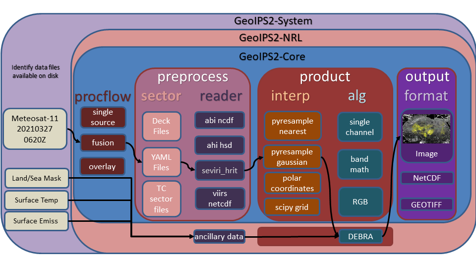

# # # Distribution Statement A. Approved for public release. Distribution unlimited.# # ## # # Author:# # # Naval Research Laboratory, Marine Meteorology Division# # ## # # This program is free software: you can redistribute it and/or modify it under# # # the terms of the NRLMMD License included with this program. This program is# # # distributed WITHOUT ANY WARRANTY; without even the implied warranty of# # # MERCHANTABILITY or FITNESS FOR A PARTICULAR PURPOSE. See the included license# # # for more details. If you did not receive the license, for more information see:
Description of GeoIPS structure#
Overview of interfaces and plugins#
A primary goal of GeoIPS is to provide seamless integration of external functionality, with no reference to proprietary algorithms and readers from the base open source geoips code base.
GeoIPS Interfaces are used to abstract the process of accessing different pieces of GeoIPS functionality (plugins) in order to support installing GeoIPS Plugins from external repositories with no reference to those pieces of functionality from within the main code base.
Example external plugin functionality:
{kind=link}
GeoIPS makes use of Python entry points to install external packages within the geoips namespace, then an internal Application Programming Interface to access specific modules.
GeoIPS is made up of a collection of plugins of different types, accessed via specific plugin interfaces.
The primary plugin interfaces include:
processing workflows (procflows) - drive a specific collection of steps for a particular type of processing
static sectors - specifications of domains of interest
dynamic sectors - specifications of dynamic domains of interest
readers - specifications for ingesting a specific data type, and storing in the GeoIPS xarray-based internal format
products - overall product specification, including interpolation routine, algorithm, colormaps, etc (see YAML-based interfaces)
interpolators - interpolation routine to apply when reprojecting data
algorithms - data manipulations to apply to dataset
colormaps - colormap to apply to resulting product
output_formatters - data format for the resulting output product (ie, netCDF, png, etc)
filename_formatters - full path and file name formatting specification, using attributes within the xarray objects
The primary processing workflows available at this time, which access the appropriate plugins at the appropriate point in the processing stream using the appropriate plugin interface, include:
single_source - single input type and single output type
config_based - efficient method for producing all possible outputs for a given set of data files.
Example single_source processing workflow:
{kind=link}
Example of config based processing workflow
{kind=link}